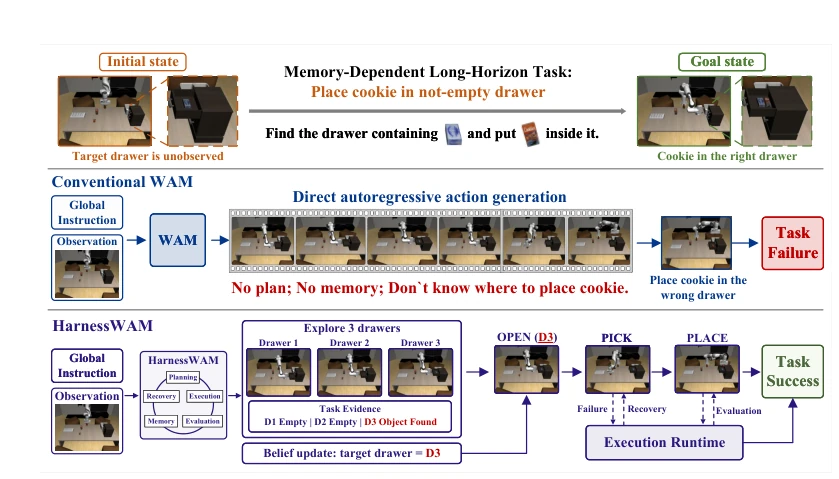
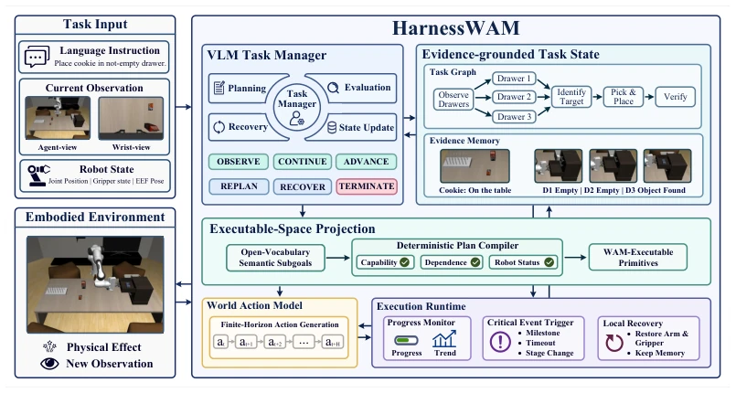
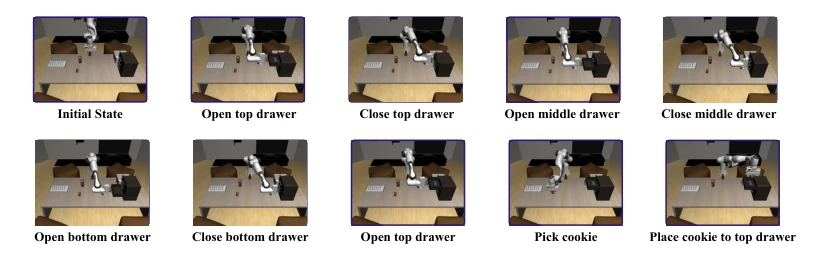

This paper imposes a "tight constraint" on WAM, named HarnessWAM. WAM itself is a prediction enthusiast, capable of calculating future frames, but breaks down when encountering long-horizon tasks; this is the so-called "prediction-deliberation gap". The authors did not modify the WAM architecture, but instead added an external VLM task manager, creating an evidence-driven graph structure. This move is quite clever, forcibly pulling semantic planning back into the physically executable space. However, will relying on VLM for decision-making increase latency? And that "capability-conditioned projection" sounds like a complex compiler; what if the WAM skill set is insufficient? Experimental data on RoboMemArena is indeed impressive, but improvements on RoboCerebra are limited, suggesting this framework may not be as effective on pure reasoning tasks as on memory-dependent tasks. Furthermore, although the recovery mechanism retains scene knowledge, whether resetting the ontology state can always succeed is also questionable. Overall, it adds an "exoskeleton" to WAM, enabling it to run a marathon rather than a sprint, but the weight and energy consumption of the exoskeleton must also be accounted for.
研究动机Motivation
WAM 联合学习环境动态和机器人动作，像 Li et al. (2026) 的 LingBot-VA 和 Ye et al. (2026) 的 DreamZero 都展示了其在局部控制上的潜力。但问题在于，WAM 的预测是有限时域的，无法维持全局任务状态。遇到需要记忆、跨阶段状态维护或失败恢复的复杂任务时，WAM 直接生成动作容易“翻车”。比如图 1 所示，目标被遮挡后，WAM 就不知道把饼干放哪了。现有的语言模型 Agent 多针对数字环境，物理交互的连续性和不确定性让它们难以直接落地。因此，需要一种外部的结构化状态维护机制，填补局部预测与持久决策之间的鸿沟。
WAM jointly learns environment dynamics and robot actions; like Li et al. (2026)'s LingBot-VA and Ye et al. (2026)'s DreamZero have demonstrated its potential in local control. But the problem is that WAM's prediction is limited in time horizon and cannot maintain global task states. When encountering complex tasks requiring memory, cross-stage state maintenance, or failure recovery, WAM directly generating actions is prone to failure. As shown in Figure 1, after the target is occluded, WAM does not know where to put the cookie. Existing language model agents mostly target digital environments; the continuity and uncertainty of physical interaction make them difficult to deploy directly. Therefore, an external structured state maintenance mechanism is needed to fill the gap between local prediction and persistent decision-making.

Figure 1: Prediction–deliberation gap in a memory-dependent task. A conventional WAM leaves the target unresolved, whereas HarnessWAM accumulates evidence, binds the target, and coordinates subsequent execution.
HarnessWAM is a model-external agent framework aimed at solving WAM's limited time horizon prediction problem. The overall process is: the VLM task manager receives instructions and observations, generating evidence-supported scene beliefs and task graphs. Next, executable space projection compiles open semantic plans into atomic skill sequences supported by WAM, ensuring compliance with capability boundaries and dependencies. Execution adopts dual time-scale feedback: a lightweight progress estimator provides execution evidence at high frequency, while the task manager deliberates at low frequency at key milestones. Specific modules include: 1) Evidence-grounded task state: representing task nodes and variable bindings with a graph structure, distinguishing observation, inference, and unknown states, ensuring cross-stage information is not lost. 2) Capability-conditioned projection: defining a parametric operation ontology, checking parameter types, dependencies, and preconditions, mapping VLM plans to WAM-executable primitives; if infeasible, report error and replan. 3) Event-driven control: progress estimator triggers events, manager decides to continue, observe, replan, or recover, modifying only unexecuted parts. 4) Ontology state recovery: restore arm state upon failure but retain scene knowledge, avoiding restart from scratch, using historical evidence to guide subsequent recovery.

Figure 2: Overview of HarnessWAM. The VLM Task Manager converts a global instruction and current observations into an evidence-grounded task graph. Executable-space projection compiles open-vocabulary semantic subgoals into WAM-supported primitives subject to capability, dependency, and embodiment-state constraints. The WAM and execution runtime form a fast control loop, while event-triggered Task Manager decisions update state, revise the plan, recover the robot embodiment, or terminate execution.
Evaluated on RoboMemArena and RoboCerebra Ideal. Baselines include π0.5, HiF-VLA, MemoryVLA, as well as Whole Task and Static Plan variants of WAM. Metrics are full task success rate and subtask success rate. HarnessWAM achieved 59.6% full task success rate on RoboMemArena, outperforming PrediMem by 21.1 percentage points. SR on RoboCerebra Ideal is 23.7%. Ablation experiments show executable space projection contributes the most; after removal, success rate plummets to 18.5%. Progress event triggering and task state maintenance are also crucial; removing task state causes full task success rate to drop by 11.9 points. Figure 3 shows a typical rollout; the robot can remember the content of the occluded drawer and place objects correctly. This indicates that structured orchestration significantly improves WAM's reliability in partially observable, long-horizon tasks, and the recovery mechanism is particularly important for long-sequence tasks.

Figure 3: Selected keyframes from a representative HarnessWAM rollout on RoboMemArena Task 4. The robot opens and closes all three drawers in sequence, retains the evidence identifying the non- empty top drawer after it becomes occluded, and conditions subsequent execution on this target binding. It then reopens the target drawer and picks and places the target object inside.